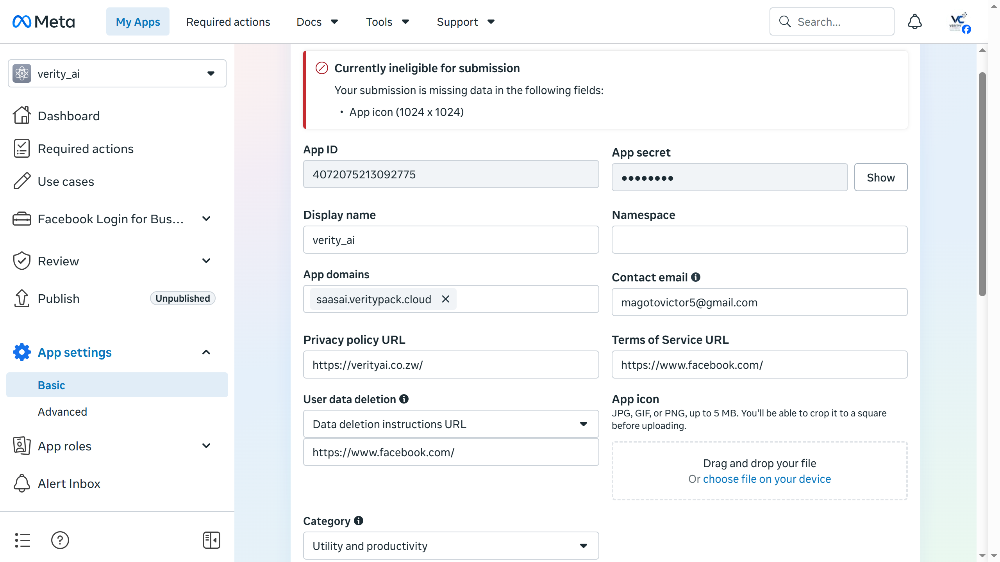
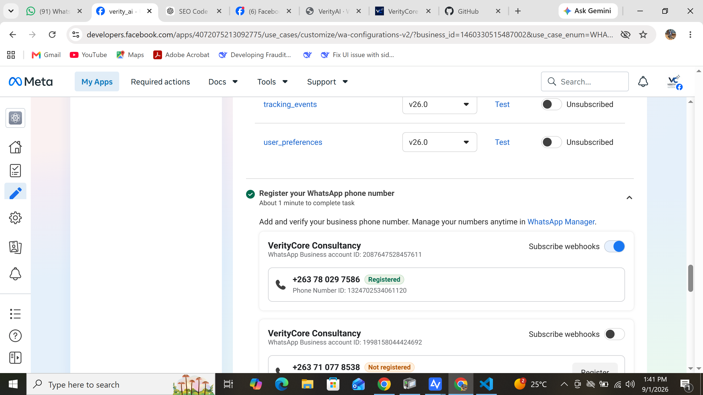
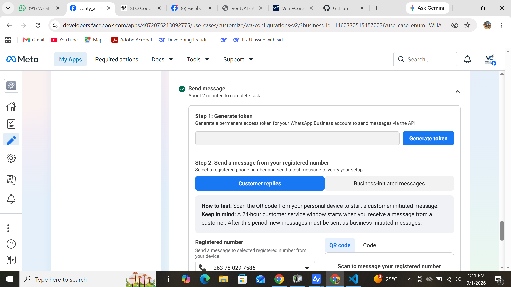
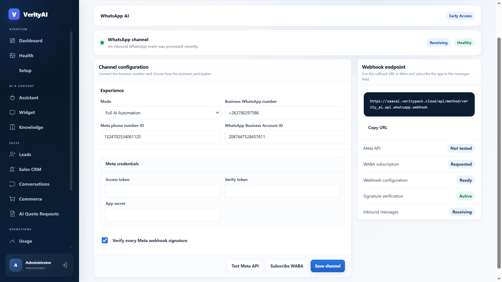
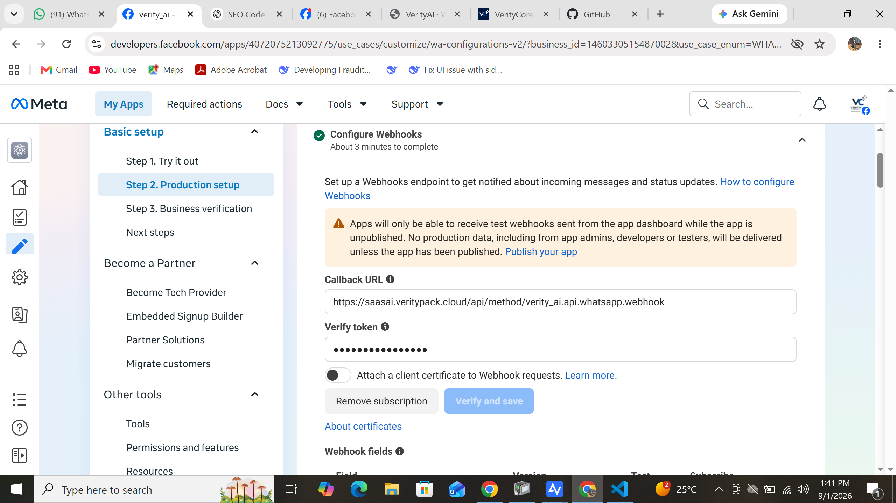
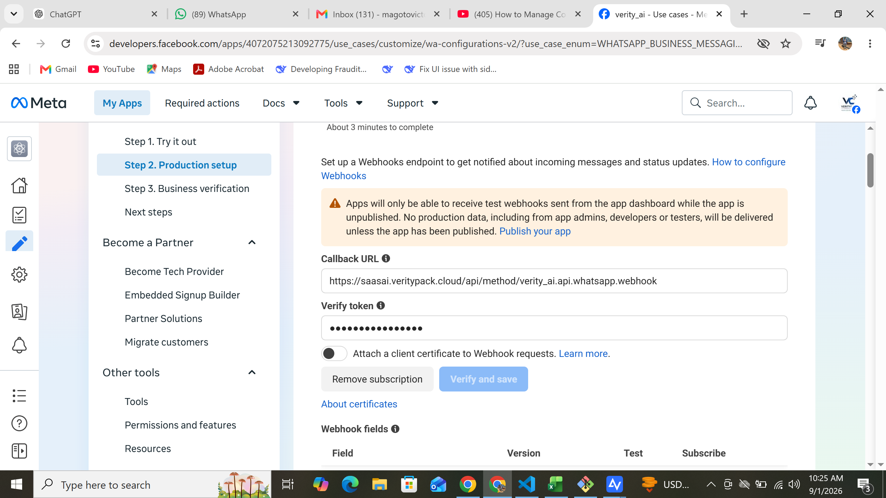

From the first browser URL to a live AI reply—every route, field, button and success check in one illustrated walkthrough.
Built from the working production setup
This manual uses the real Meta and VerityCore AI screens. Security values are hidden, but navigation, labels, IDs and the configuration flow remain visible so you can follow them exactly.
ReceivingHealthyAI replies active
VVerityCore AI
Read this first
What you need before starting
Allow 30–60 minutes for setup. Meta’s business or display-name review can take longer.
A Meta/Facebook account with administrator access to your organisation’s Meta Business Portfolio.
A business website with real Privacy Policy, Terms of Service and Data Deletion pages.
A square 1024 × 1024 app icon and a monitored business contact email.
A phone number that can receive an SMS or voice verification code and can be registered on the WhatsApp Business Platform.
An active VerityCore AI workspace with permission to manage WhatsApp.
Never share these three values: Meta Access Token, Meta App Secret and your Verify Token. Store them in a password manager. If one is exposed, revoke or rotate it immediately.
The setup sequence
Stage
Where
Result
1. Create app
Meta for Developers
A Business app with the Connect on WhatsApp use case.
2. Complete app details
App settings → Basic
Valid business URLs, contact email, icon and category.
3. Register number
Use cases → Production setup
Registered phone, Phone Number ID and WABA ID.
4. Save credentials
VerityCore AI → WhatsApp
Channel saved with signature verification enabled.
5. Configure webhooks
Meta → Configure Webhooks
Verified callback, messages field and WABA subscription.
6. Publish and test
Meta + a different phone
VerityCore AI shows Receiving / Healthy and sends an AI reply.
About identifiers: App ID, Phone Number ID and WABA ID are required for setup. This guide hides actual security credentials, not the operational IDs users need to recognise.
Click Log In and use the Meta account that administers your business.
Click My Apps in the top navigation.
Click Create App. Choose the Business use case and select Connect on WhatsApp when Meta asks what the app should do.
Enter a clear app name, choose the correct Business Portfolio, add your contact email and complete app creation.
Open the new app. Confirm that Connect on WhatsApp appears in the use-case selector.
Route after login: My Apps → Create App → Business → Connect on WhatsApp
Do not continue until
The app is owned by or connected to the correct Business Portfolio.
You can see Dashboard, Required actions, Use cases, Publish and App settings in the left menu.
You know which WhatsApp Business Account and number belong to this workspace.
Meta changes labels occasionally. If “Connect on WhatsApp” is not shown during creation, create a Business app first and add the WhatsApp use case from its dashboard.
Add your SaaS domain under App domains without https:// or a page path.
Enter real, public URLs from your own website for Privacy Policy, Terms of Service and User data deletion. Do not use Facebook’s homepage as a placeholder.
Upload a square 1024 × 1024 PNG or JPG app icon, select a category and click Save changes.
Copy the App Secret only when you are ready to paste it into VerityCore AI.

Actual Meta screen: App settings → Basic. The App Secret is already masked. The screenshot shows incomplete/placeholder fields; your production app must use your own valid business URLs and icon.
VVerityCore AI
Step 3
Register your WhatsApp phone number
Click path: My Apps → [your app] → Use cases → Connect on WhatsApp → Customize → Basic setup → Step 2. Production setup
Under Register your WhatsApp phone number, choose the correct WhatsApp Business Account.
Add the business number, select SMS or voice verification, enter the code and finish registration.
Wait until the phone shows Registered.
Copy the Phone Number ID displayed below the number.
Copy the WhatsApp Business Account ID displayed below the business name. This is the WABA ID.
Turn on Subscribe webhooks for this exact WABA.

Actual Meta screen: the correct WABA shows the registered number, Phone Number ID and blue Subscribe webhooks toggle. If several WABAs appear, match the business and phone carefully.
VVerityCore AI
Step 4
Generate the Meta access token
Click path: Use cases → Connect on WhatsApp → Customize → Step 2. Production setup → Send Message → Generate token
Click Generate token and authorise the correct business and WABA.
For production, use a System User/permanent token—not a short-lived “Try it out” token.
The token needs whatsapp_business_management and whatsapp_business_messaging.
Copy it directly into a password manager, then into VerityCore AI. Never expose it in email, screenshots or chat.
The registered number shown here must match the number and Phone Number ID entered in VerityCore AI.

Actual Meta screen: Generate token and customer-reply test area. No access-token value is visible.
A temporary token may work during setup and stop later. Before launch, confirm the production token belongs to the same app, has both WhatsApp permissions and has access to the correct WABA.
Open the URL above and sign in with your VerityCore AI account.
Select the workspace that owns the WhatsApp business number.
In the left menu, scroll to Operations and click WhatsApp.
You may use the direct route below after signing in. Replace YOUR-WORKSPACE with the workspace slug from your portal URL.
Direct WhatsApp route:https://saasai.veritypack.cloud/verityai/whatsapp?workspace=YOUR-WORKSPACE
Have these values ready
Business number
International format, such as +263…
Phone Number ID
From Meta Production setup.
WABA ID
WhatsApp Business Account ID.
Access token
Production/System User token.
App Secret
App settings → Basic.
Verify token
A random secret you create.
You create the Verify token. Meta does not issue it. Generate a long random value, keep it private and use the exact same value in VerityCore AI and Meta.
Enter the Business WhatsApp number, Meta phone number ID and WhatsApp Business Account ID.
Open Meta credentials. Paste the Access Token, your random Verify Token and the App Secret.
Keep Verify every Meta webhook signature selected.
Click Save channel. Secret inputs clear after saving; this does not mean they were deleted.
On the right, click Copy URL under Webhook endpoint.

Actual VerityCore AI screen. Operational IDs remain visible; the credential inputs expose no security keys. Copy the callback URL from the right panel.
VVerityCore AI
Step 7
Verify the callback URL in Meta
Click path: Meta app → Use cases → Connect on WhatsApp → Customize → Basic setup → Step 2. Production setup → Configure Webhooks
Paste the URL copied from VerityCore AI into Callback URL. Do not type it manually.
Paste the exact same secret used in VerityCore AI into Verify token. It is case-sensitive.
Leave Attach a client certificate off unless your organisation configured mTLS.
Click Verify and save. Meta should accept the callback.
If it fails, save the VerityCore AI channel again and re-check the full URL and Verify token.

Actual Meta screen: Callback URL and masked Verify token. The warning confirms that an unpublished app does not receive real production data.
After Meta verifies the callback, scroll down to Webhook fields.
Find the exact row messages. Do not confuse it with similarly named template/status fields.
Turn its Subscribe switch on.
Optional: click Test on the messages row to send a dashboard test payload.
Return to the registered-number section and confirm Subscribe webhooks remains blue/on for the correct WABA.

Actual Meta screen: scroll below Callback URL to Webhook fields and subscribe messages. The Verify token is already masked.
A verified callback is not enough. Without the messages subscription, customers can see delivery ticks while VerityCore AI receives nothing and cannot reply.
VVerityCore AI
Step 9
Confirm the WABA subscription
Meta route: Production setup → Register your WhatsApp phone number → Subscribe webhooks
VerityCore AI route: Operations → WhatsApp → Subscribe WABA
In Meta, the correct WABA’s Subscribe webhooks switch should be blue/on.
In VerityCore AI, click Subscribe WABA. Meta may briefly report the request as pending even when its dashboard toggle is on.
Click Test Meta API. Success confirms the token, app, Phone Number ID and permissions can reach Meta.
If several WABAs are listed, confirm the enabled one contains your registered number.
Actual Meta screen: the correct registered number sits under the WABA whose Subscribe webhooks switch is on.
“Requested” is not the final test. A real inbound message and AI reply are the authoritative proof that the webhook route works.
VVerityCore AI
Step 10
Publish the Meta app
Click path: Meta app → Required actions → complete all items → Publish
Open Required actions and complete every blocker: real business URLs, app icon, contact details, business verification and any requested review.
Open Publish in the left menu and follow Meta’s prompts to set the app Live.
Return to Production setup and confirm the unpublished-app warning is gone.
Recheck that the callback is verified, messages is subscribed and the WABA toggle remains on.
Actual Meta warning: while unpublished, the app receives dashboard test webhooks only. Real customer messages are not delivered to VerityCore AI.
This was the decisive production issue in the working setup. Delivery ticks do not prove that an unpublished Meta app delivered a webhook. Publish before the real customer-message test.
VVerityCore AI
Step 11
Run the end-to-end test
Use a different personal WhatsApp number. Never message the registered business number from itself.
Send “Hello” to the registered business number.
Wait a few seconds. The VerityCore AI assistant should reply in WhatsApp.
Refresh the VerityCore AI WhatsApp page. It should show Receiving and Healthy.
Open Sales → Conversations and confirm the new conversation uses the workspace’s assistant and knowledge.
Actual working state: a recent inbound event was processed and the channel shows Receiving / Healthy.
✓ Setup complete
A message from another phone received an AI reply, and the portal shows Receiving / Healthy.
24-hour service window: after a customer messages you, normal replies are allowed during the service window. Business-initiated messages outside it generally require an approved WhatsApp template.
VVerityCore AI
Troubleshooting
Fix the common failure states
What you see
Cause
Correction
Two ticks, no AI reply, “Awaiting event”.
Inbound webhook was not delivered.
Publish the app; subscribe messages; enable the correct WABA toggle.
Callback verification fails.
Wrong callback or Verify token.
Copy the URL from VerityCore AI and use the same case-sensitive Verify token in both systems.
Meta API permissions error.
Wrong/expired token or missing access.
Create a production System User token with both permissions and correct app/WABA access.
Signature verification fails.
Wrong App Secret.
Use the App Secret from the same Meta app. Never leave signature verification disabled.
WABA stays Requested.
Listing delayed or IDs mismatch.
Check Meta’s toggle, confirm IDs, then send a real inbound message.
Replies worked, then stopped.
Temporary token expired.
Replace it with a production System User/permanent token.
Wrong business receives events.
Mixed Phone Number/WABA IDs.
Match business, number, Phone Number ID, WABA ID, app and token.
Security and handover checklist
Access Token, Verify Token and App Secret are stored only in a password manager and VerityCore AI.
Webhook signature verification remains enabled.
The Meta app is Live and all Required actions are complete.
The messages field and correct WABA are subscribed.
The production test came from another phone and resulted in Receiving / Healthy.
When requesting support, include the workspace, approximate time and visible error—but never the Access Token, Verify Token or App Secret.